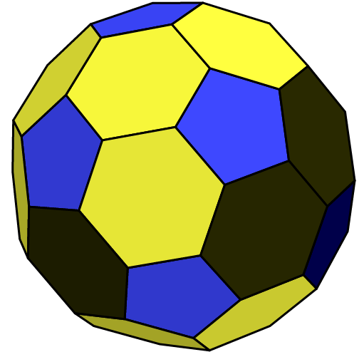
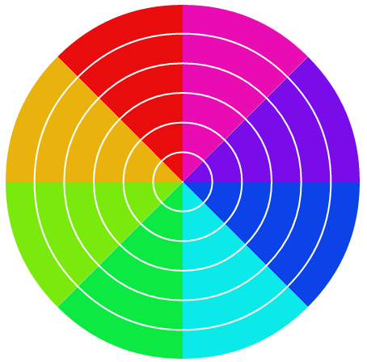
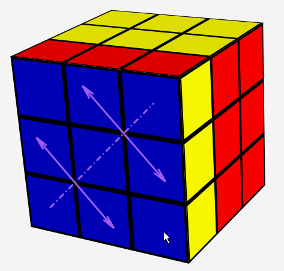
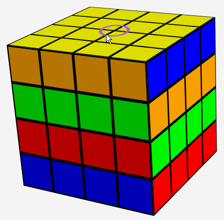
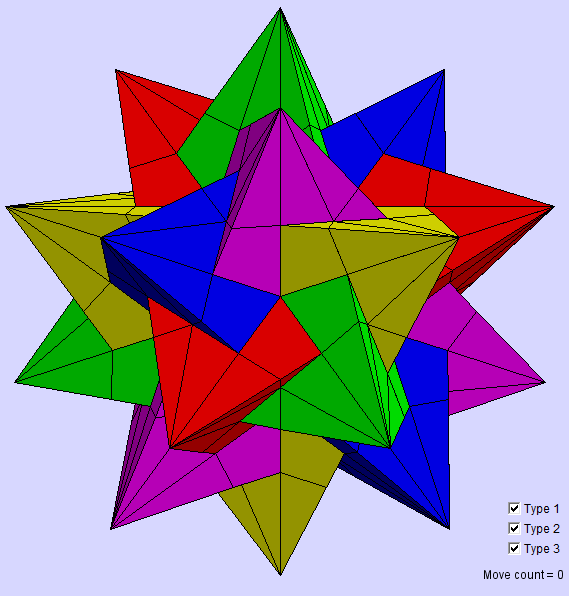
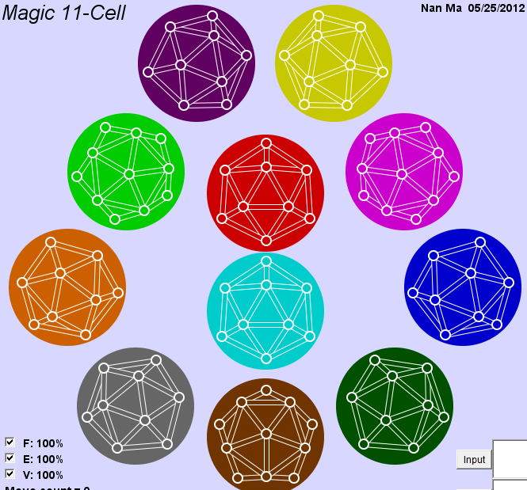
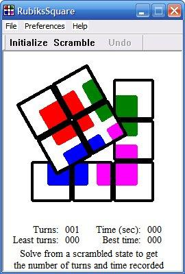
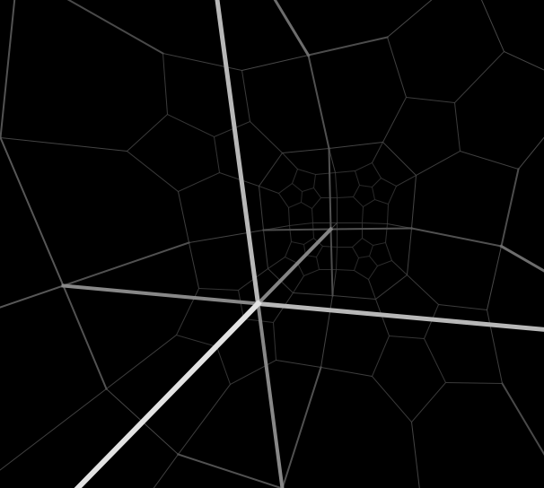

My name is Nan Ma. On many online forums I use the name "schuma" because I am a big fan of Michael Schumacher.
I am enthusastic about all the puzzles similar to the Rubik's Cube. They are called Twisty Puzzles on the Twistypuzzles forum. Duh. I have solved
I gave lectures on how to use group theory to construct algorithms to solve the puzzles listed above in UC Berkeley. Here is a recorded video.
I am an average speed cuber. My personal best is super-20.
I have created several virtual twisty puzzles:
|  |
| Polyhedral Lights Out: a puzzle similar to Lights Out in spirit but based on polyhedra. |
|  |
| Lollipop: a 2D puzzle that contains all possible pieces twisted by all subsets of axes. |
|  |
| RefleCube: a Magic Cube allowing only reflection moves rather than twisting moves, or both. |
|  |
| Clockwork Cube: a Magic Cube on which the rotation of all the slices are correlated. |
|  |
| Twisty Star: a puzzle based on the beautiful compound of five tetrahedra. It is related to the face-turning icosahedra. |
|  |
| Magic 11-cell: a puzzle based on the abstract regular polytope 11-cell. |
|  |
| Rubik's Square: a 2D puzzle like the fifteen puzzle. But instead of sliding, only twisting is allowed. |
|  |
| Inside H3: not really a puzzle. It's a visualization tool to simulate what you will see when navigating a spaceship in hyperbolic polytopes. |